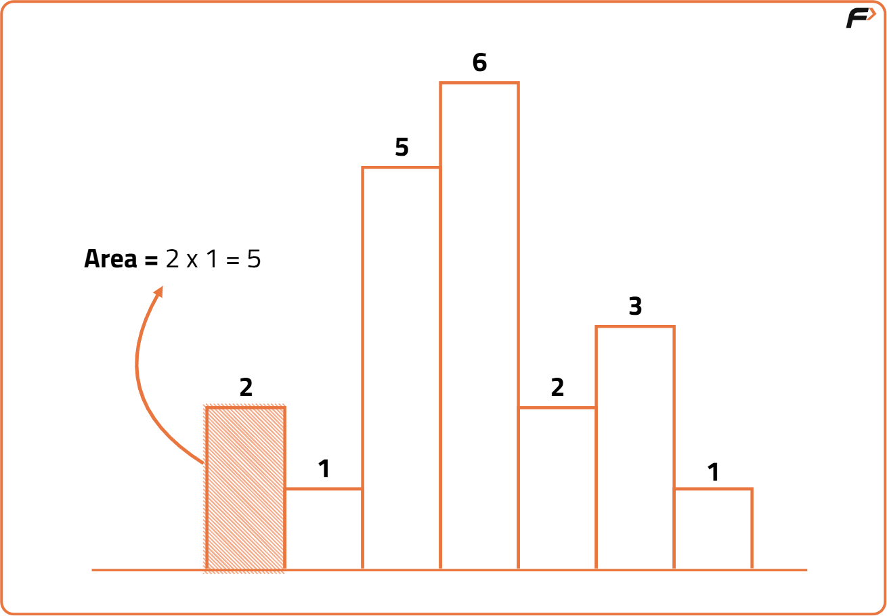
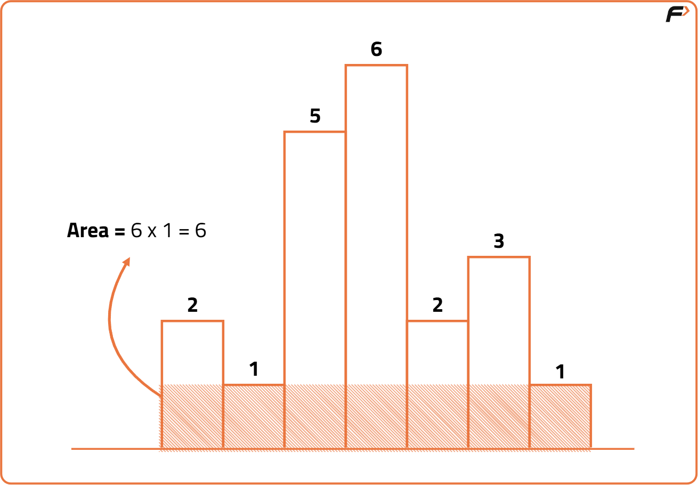
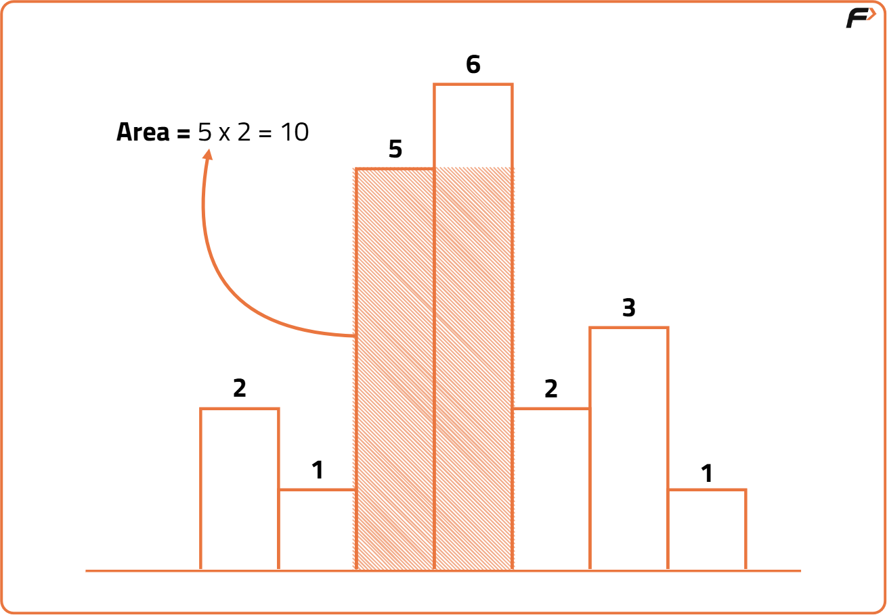
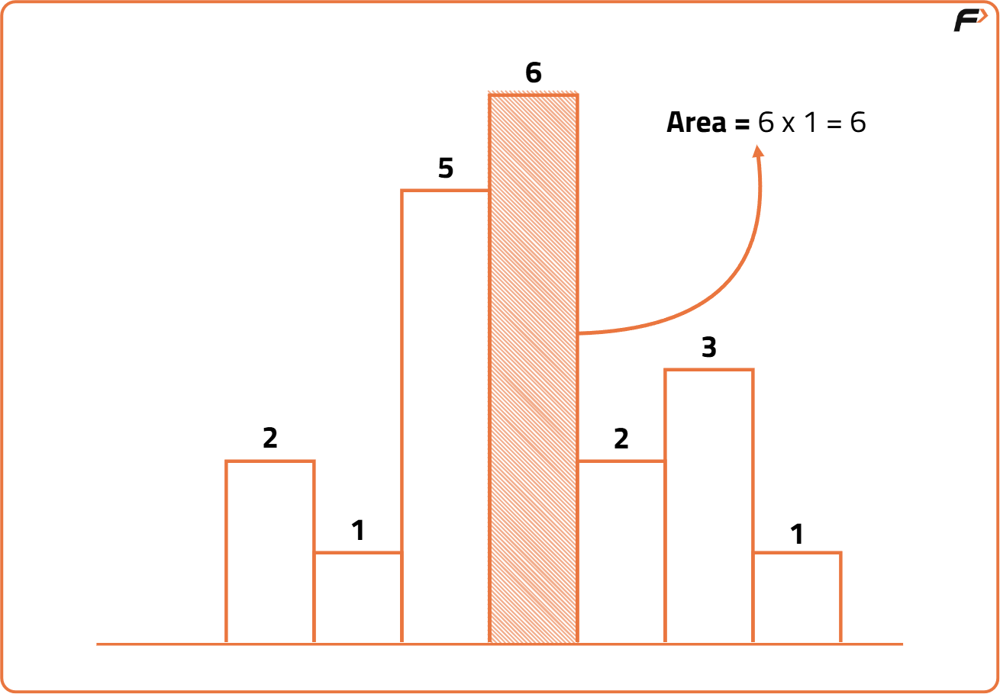
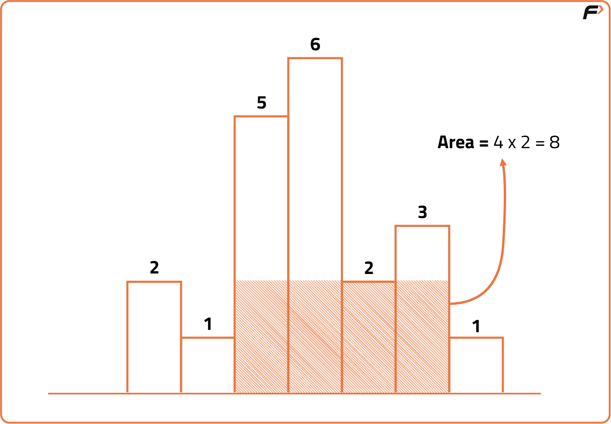
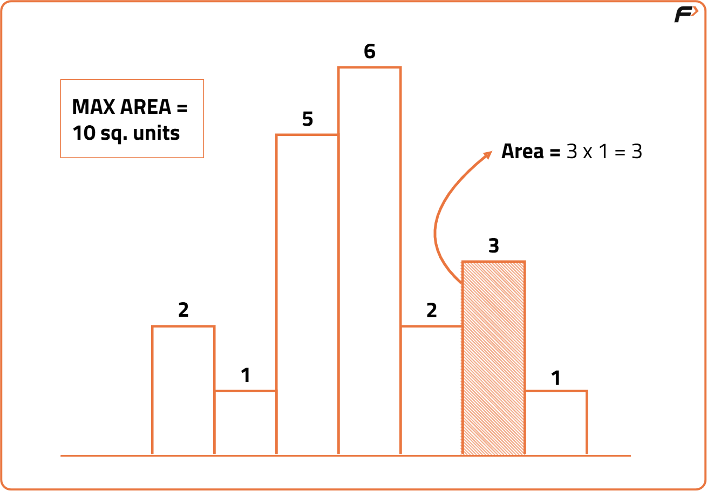
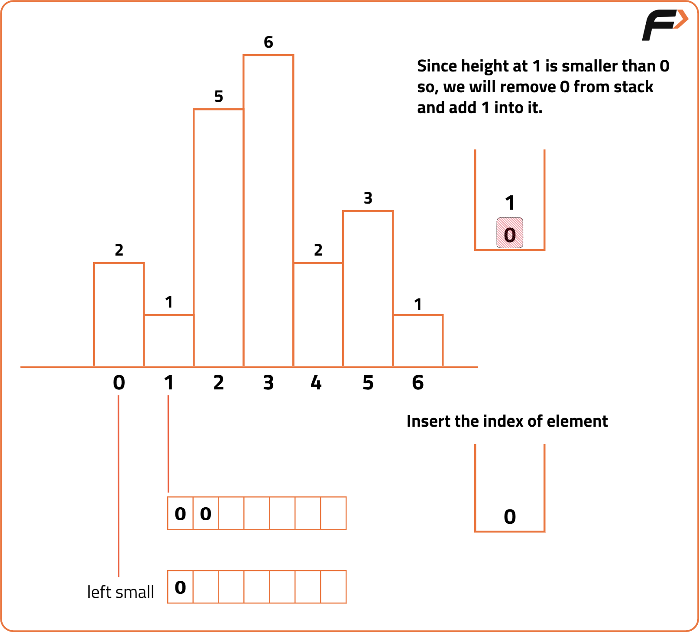
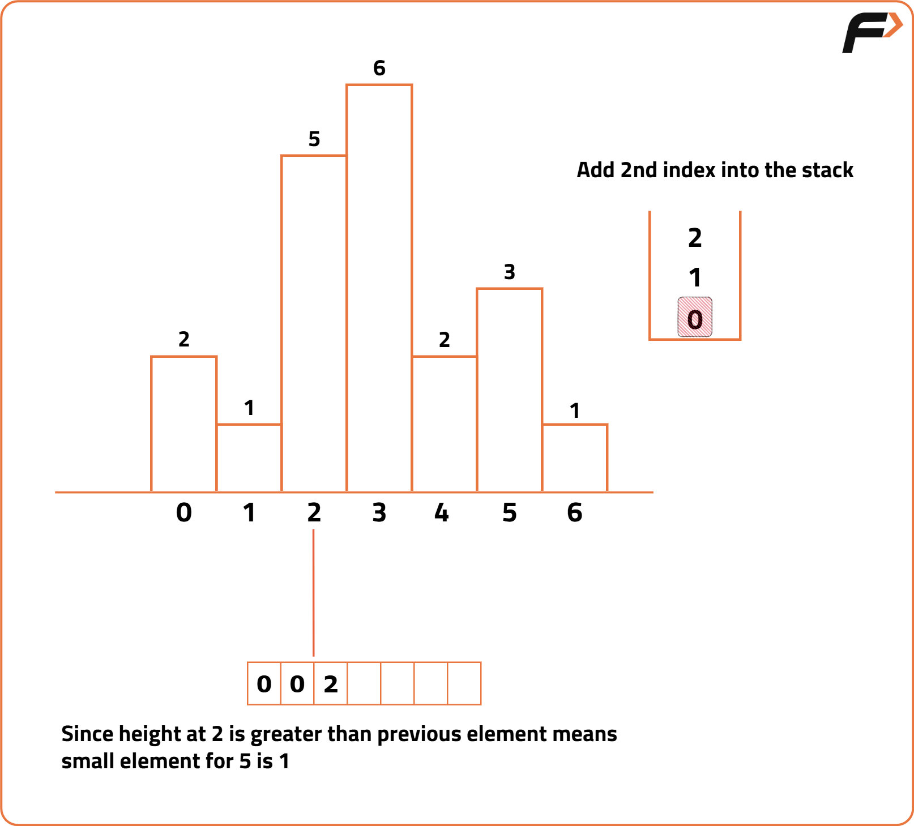
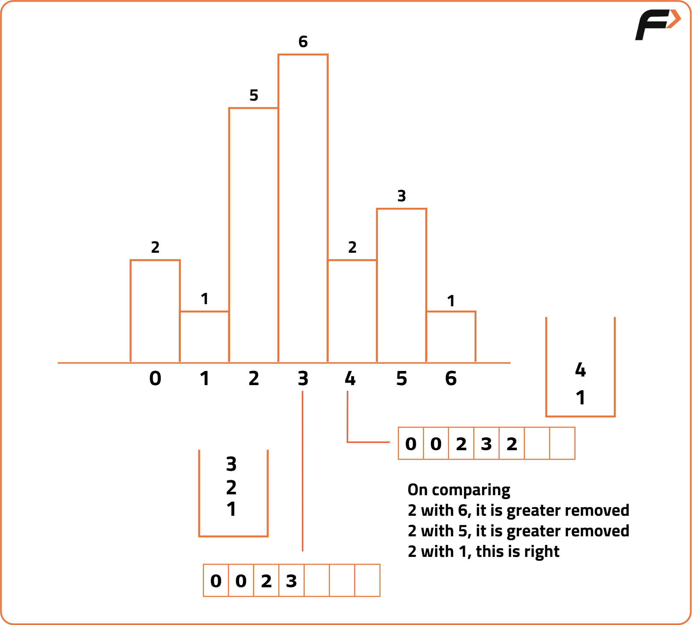
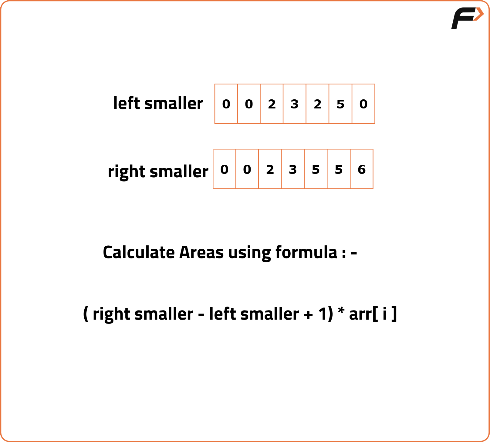

Area of largest rectangle in Histogram
Problem Statement: Given an array of integers heights representing the histogram's bar height where the width of each bar is 1 return the area of the largest rectangle in histogram. .
Examples
Example:
Input: N =6, heights[] = {2,1,5,6,2,3}
Output: 10
Disclaimer: Here is the practice link to help you assess your knowledge better. It's highly recommend trying to solve it before looking at the solution.
Brute Force
Algorithm
Dry Run
Considering the width of each bar as 1 unit.





Code
#include <bits/stdc++.h>
using namespace std;
// Brute Force Approach to find largest rectangle area in Histogram
int largestarea(int arr[], int n) {
int maxArea = 0; // Variable to store maximum area found
// Outer loop to set the starting index of the subarray
for (int i = 0; i < n; i++) {
int minHeight = INT_MAX; // To track minimum height in the subarray
// Inner loop to set the ending index of the subarray
for (int j = i; j < n; j++) {
// Update minimum height in the current window
minHeight = min(minHeight, arr[j]);
// Calculate area = height * width
int width = j - i + 1;
int area = minHeight * width;
// Update maxArea if this area is larger
maxArea = max(maxArea, area);
}
}
return maxArea; // Return the largest area found
}
int main() {
int arr[] = {2, 1, 5, 6, 2, 3, 1}; // Histogram bar heights
int n = 7; // Size of the histogram
// Call the function and print the result
cout << "The largest area in the histogram is " << largestarea(arr, n) << endl;
return 0;
}
Complexity Analysis
Optimised Apporach 1
Algorithm
Dry Run




Code
#include <bits/stdc++.h>
using namespace std;
class Solution {
public:
int largestRectangleArea(vector<int> &heights) {
int n = heights.size();
stack<int> st;
int leftsmall[n], rightsmall[n];
// Compute Nearest Smaller to Left (NSL) for each bar
for (int i = 0; i < n; i++) {
// Pop until a smaller element is found or stack is empty
while (!st.empty() && heights[st.top()] >= heights[i]) {
st.pop();
}
// If stack is empty, no smaller element on the left
leftsmall[i] = st.empty() ? 0 : st.top() + 1;
// Push current index to stack
st.push(i);
}
// Clear stack to reuse for NSR
while (!st.empty()) st.pop();
// Compute Nearest Smaller to Right (NSR) for each bar
for (int i = n - 1; i >= 0; i--) {
while (!st.empty() && heights[st.top()] >= heights[i]) {
st.pop();
}
// If stack is empty, no smaller to the right
rightsmall[i] = st.empty() ? n - 1 : st.top() - 1;
st.push(i);
}
// Calculate max area using NSL and NSR
int maxA = 0;
for (int i = 0; i < n; i++) {
int width = rightsmall[i] - leftsmall[i] + 1;
maxA = max(maxA, heights[i] * width);
}
return maxA;
}
};
int main() {
vector<int> heights = {2, 1, 5, 6, 2, 3, 1};
Solution obj;
// Output the largest area
cout << "The largest area in the histogram is " << obj.largestRectangleArea(heights) << endl;
return 0;
}
Complexity Analysis
Optimised Approach 2
Algorithm
Code
#include <bits/stdc++.h>
using namespace std;
class Solution {
public:
int largestRectangleArea(vector<int> &histo) {
stack<int> st; // Stack to store indices of the histogram bars
int maxA = 0; // Variable to keep track of the maximum area
int n = histo.size();
// Loop through each bar including an imaginary bar at the end
for (int i = 0; i <= n; i++) {
// While current bar is smaller than the top of the stack or we reached the end
while (!st.empty() && (i == n || histo[st.top()] >= histo[i])) {
int height = histo[st.top()]; // Get the height of the bar at top of the stack
st.pop(); // Remove that bar
int width;
if (st.empty()) {
width = i; // All bars before were higher
} else {
width = i - st.top() - 1; // Width between current index and index at top of stack
}
// Calculate area and update maximum area
maxA = max(maxA, width * height);
}
// Push current index into stack
st.push(i);
}
return maxA;
}
};
int main() {
vector<int> histo = {2, 1, 5, 6, 2, 3, 1}; // Input histogram
Solution obj;
cout << "The largest area in the histogram is " << obj.largestRectangleArea(histo) << endl;
return 0;
}
Complexity Analysis